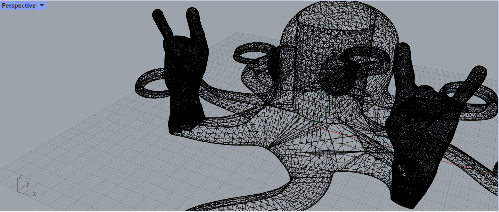
This project involved 2 parts:
Part 1: Mesh exploration: I experimented with modifying the mesh of two STLs to produce a single, printable STL. For online inspiration, I started by visiting the Makerbot Thingiverse website to look for examples of other peoples' creations, e.g., STLs and interesting closed meshes. I found this "rocktupus" mesh (an hilarious concept seemingly inspired by rock n roll and the octupus!) I imported the STL into Rhino 7 and started exploring it.
Next, with the original STL (a closed mesh to start with), I scaled it down in 3D, ran the reducemesh command on it, then ran quadremesh (my intention was to make it more low poly and smooth it out before duplicating it so that I would have two meshes to play with). Next, I duplicated the quadremeshed rocktupus and horizontally aligned the two meshes next to each other, intersecting their tentacles as if they were naturally holding hands.
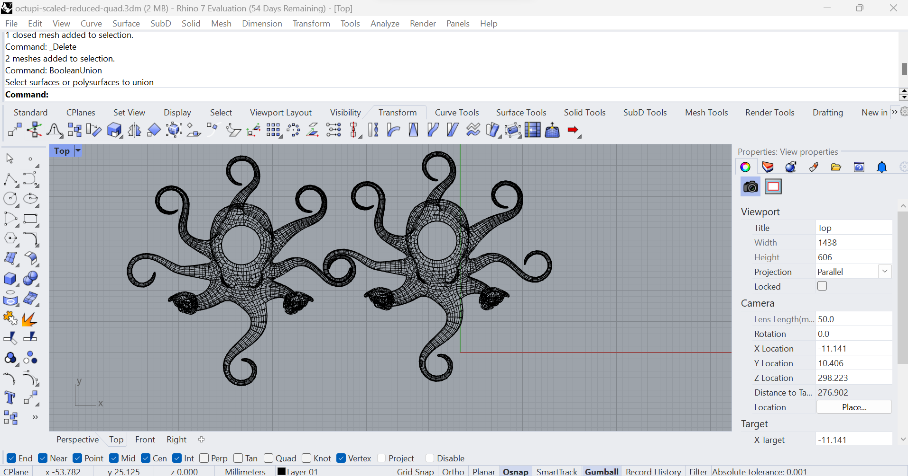
In order to produce a single STL out of these two meshes, at first I tried simply running the booleanunion command. However, I quickly realized that this may not be the correct command because I couldn't select either mesh in my Rhino viewport!
I asked my classmates for any troubleshooting tips they could offer, and one student (thanks JessieZ!) suggested trying the meshbooleanunion command instead. It worked! I was able to join the two meshes for further iteration on the rocktupus idea and export the new mesh as a single. printable STL.
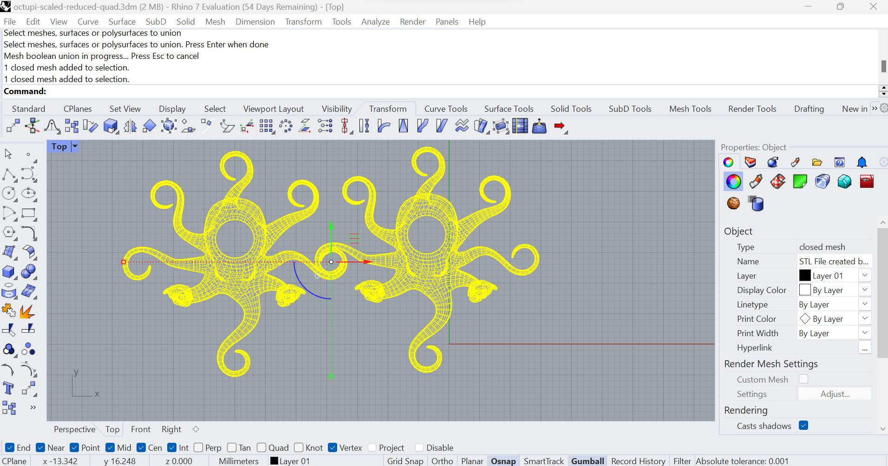
STL file
As a final step with the newly combined mesh, I loaded the new STL file into Cura to check for any issues it might have and ensured that it passed all checks for rapid prototyping:
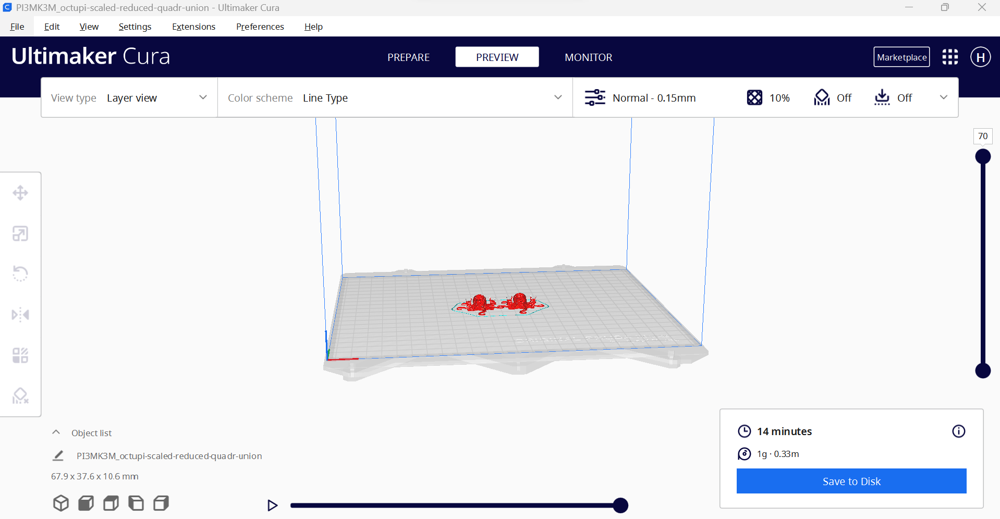
Caveat: for part 2 of this project, I took a SHARP pivot away from the digital, meshy rocktupus and looked outside for inspiration while thinking about my lamp design!
Part 2: Lamp creation: Using measurements of some lamp "innards" that I purchased on Amazon.com as a point of departure, I set out to create a lamp that could be assembled around the lamp's innards using a variety a digital fabrication techniques.
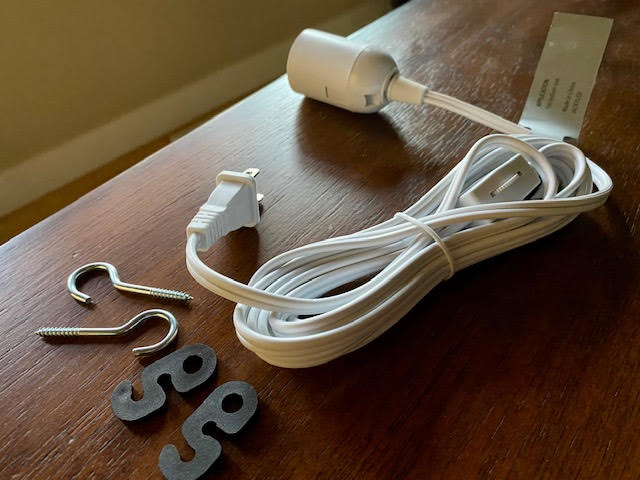
While looking out the window, I observed how the sunlight was shining through the leaves in this Japanese Maple. Such a pretty orange color!
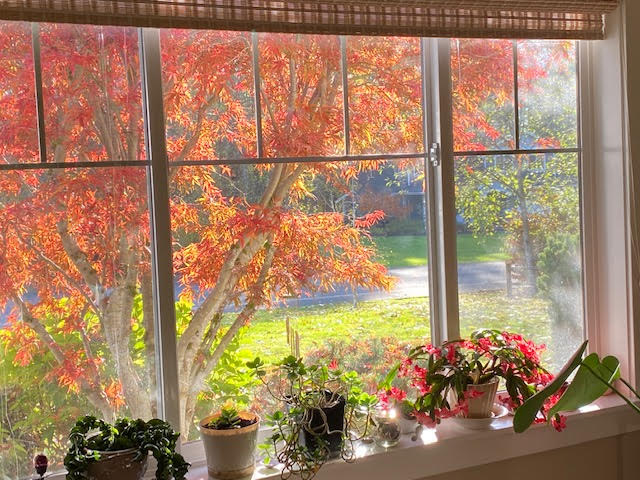
I stepped outside to take a photo of the same tree from another angle and to forage some of its leaves for further discovery.
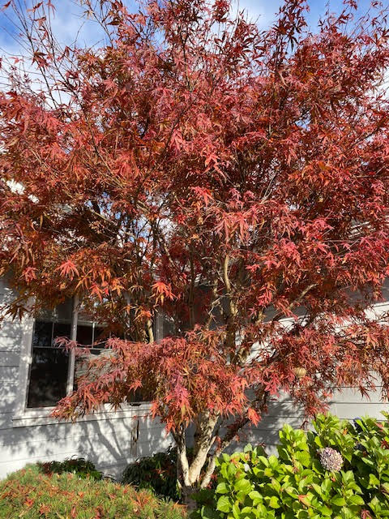
During my ideation process, I spent some more time in nature looking for further color and texture inspiration and documented some ideas to consider incorporating into my design. On a walkabout at a local park in the U.S. Pacific Northwest, I came across these vibrant fall colors and intriguing textures:
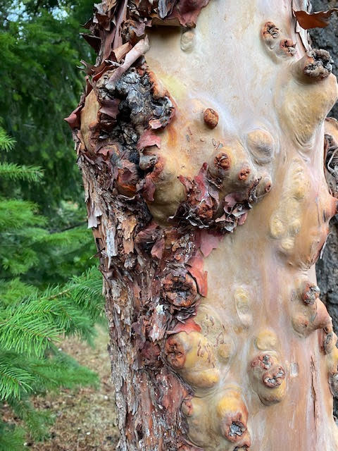
Then, I returned to the web and looked for some leafy lamp digital models. I found this one on Thingiverse and decided to explore it further to incorporate into my own design:
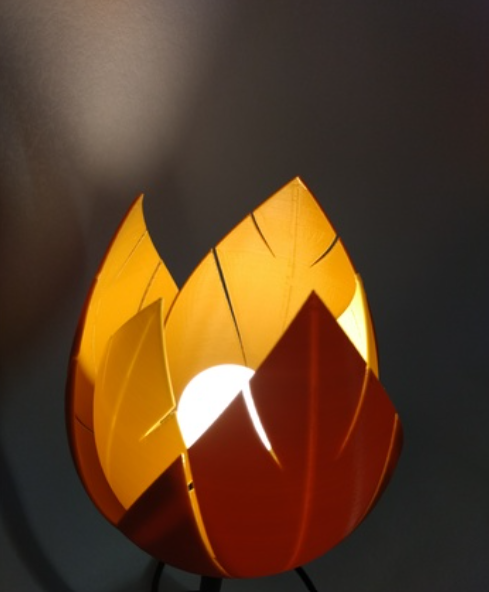
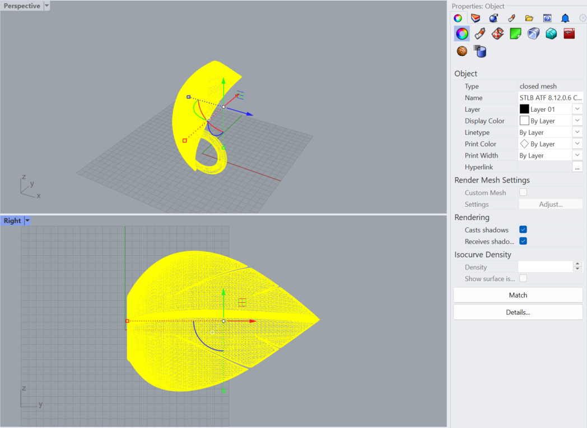
My initial vision was to create a warm, decorative lamp design that could hang from a corner near the wall using ceiling hooks and cord hooks to suspend it. At first I thought I might hang the lamp shade facing downward from the lamp socket. Based on the approximate measurements of my lamp socket (28 mm in diameter, 56 mm in length) and the length of the cord (12 feet!), this design seemed feasible using the leafy lamp shade. I did some quick sketches to visualize it:
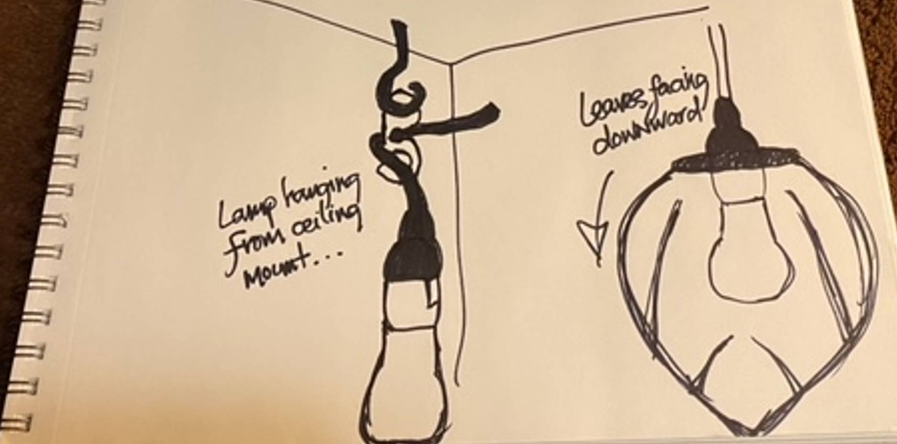
Next, I went to the university makerspace to prepare my project for printing so that I could test the initial design. Since I wanted to create a warm ambiance from the light, I decided to use an orange PLA filament for 3D printing. On one of the Dremel printers, I placed all 3 leaves standing pointing upwards in a single STL file. Each leaf had a hole at its base with a diameter slightly smaller than the diameter of the lamp socket. The estimated printing time was 8 hours, and I added supports to my leaves so that they would print without falling over.
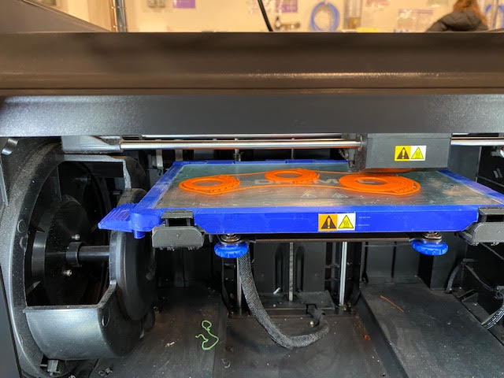
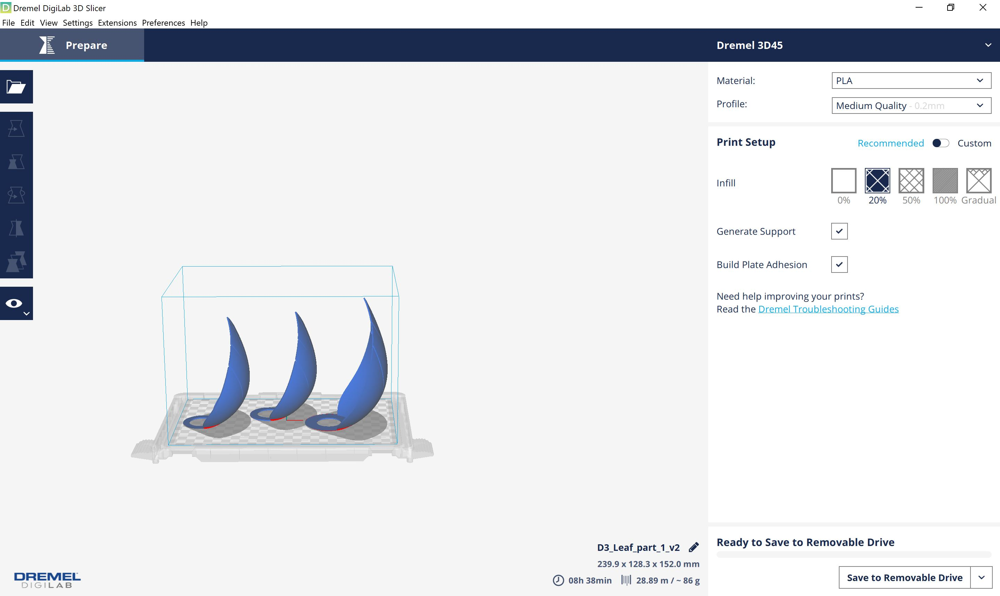
Rhino file
The leaves printed beautifully, so I started building my lamp, theorizing that the base of the 3 leaves would neatly stack on top of each other at a 90 degree angle from the 3 leaves pointing down. I imagined that the weight from stacking the 3 leaf bases would prevent the lamp shade pieces from moving out of place.
Alas, I was wrong! There wasn't enough structure in place with stacked leaf bases to hold them in place at 90 degrees without needing some kind of additional fastening mechanism. The bases of the leaves did not sit flush at the top of the socket but rather had a loose fit with small gaps.
Therefore, I decided to pivot my lamp design once more, this time leveraging a bedroom lamp for which I had been planning to buy a new lampshade. I removed the old shade, leaving only the lamp stand, innards, and light buld connected and intact. Brown, curvy, and symmetrical in shape, I thought it could make a lovely base to contrast and showcase my new, bright orange, leafy lamp shade. For my next test, I took measurements of the lamp socket on the bedroom lamp stand to check for fit and discovered that the bases of my leaves would fit perfectly around the socket!
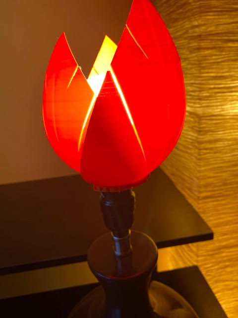
I arranged the leaves with the largest one in front, then two slightly smaller leaves on either side of the larger one. It was a perfect fit at the base of the leaves with no gaps in between them and no need for additional fasteners of any kind:
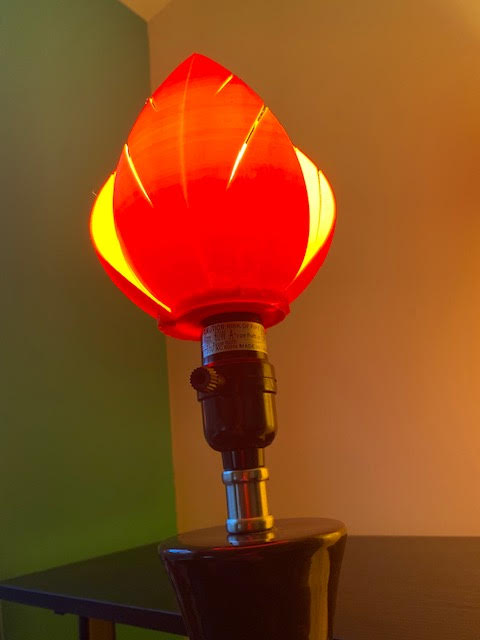
In the end, the final lamp came together better than I imagined!
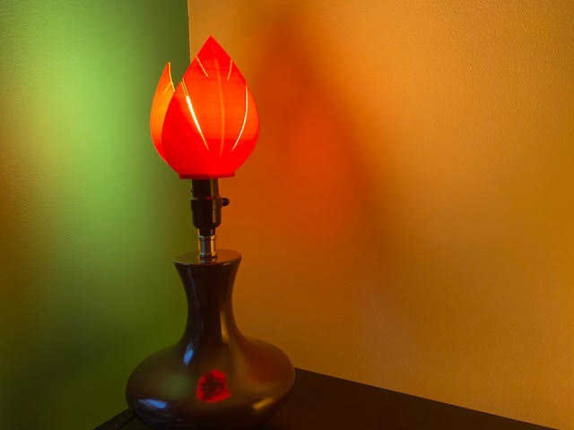
Resources:
Thingiverse Rock2Pus Planter
Thingiverse Leaves Lamp Shade